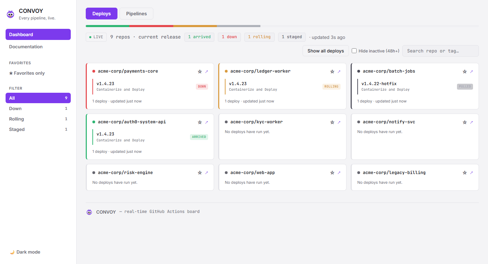

Every pipeline,
one screen, live.
A self-hosted GitHub Actions board for your whole org — every repo, every run, live, split into deploys and everything else. Works just as well if it's only your own repos.
Self-hosted·Webhooks, not polling·MIT license

How it works
No polling, no pasted links — GitHub tells Convoy the moment something happens.
Push, tag, or release
Anything happening in a repo the App is installed on.
GitHub sends a webhook
Delivered directly to your instance — not a poll, not a delay.
It's on your board
Classified as a deploy or a pipeline, live, on the repo's card.
The problem it solves
The status quo is a browser full of tabs and a lot of manual refreshing.
Watching a release roll out across dozens of repos usually means a browser full of Actions tabs, refreshed by hand. Convoy installs a GitHub App once and puts every run on one board — Deploys, Pipelines, and an Overview that answers the only question that matters: is anything down right now?
Install
Self-hosted only — your CI data never leaves your own infrastructure.
# see the README for GitHub App setup first
helm install convoy ./helm/convoy \
--set-file github.privateKey=./private-key.pem \
--set github.appId=<APP_ID> \
--set github.webhookSecret=<WEBHOOK_SECRET> \
--set ingress.host=convoy.your-internal-domain.com
# see the README for GitHub App setup first
docker run -p 3000:3000 \
-e APP_ID=... \
-e WEBHOOK_SECRET=... \
-e PRIVATE_KEY_PATH=/app/private-key.pem \
-v $(pwd)/private-key.pem:/app/private-key.pem:ro \
ghcr.io/juaniartal/convoy:latest
Just want to see it first? npm run demo runs Convoy
with fake data — no GitHub App needed.
How it's built
Every decision here traded convenience for something a serious infra team would actually trust.
Webhooks, not polling
GitHub pushes events directly to your instance. Polling only exists as a safety net — scales to hundreds of repos without hammering the API.
Minimal permissions
actions: read and metadata: read. Nothing else. Can't read file contents, can't write, can't touch your workflows.
Self-hosted, always
Docker image, Helm chart. No Convoy-operated backend, ever — your CI data never leaves your own cluster.
Deploy vs. pipeline
A release or version tag is a deploy. Everything else is a pipeline. Per-repo overrides handle the exceptions.
Real SSO, or bring your own
A shared key, or true SSO against Azure AD, Google, Okta — any OIDC provider. Or skip both and gate it with your own ingress/VPN instead.
MIT, free, forever
No paid tier, no telemetry phoning home, no vendor lock-in. Fork it, run it, change it.
Built by one person, in the open
No company behind this, no roadmap dictated by a board.
Juan Ignacio
I built Convoy because release day meant 40 open Actions tabs, refreshed by hand. It's free, MIT-licensed, and I run it myself — if something's broken, tell me and I'll actually fix it.